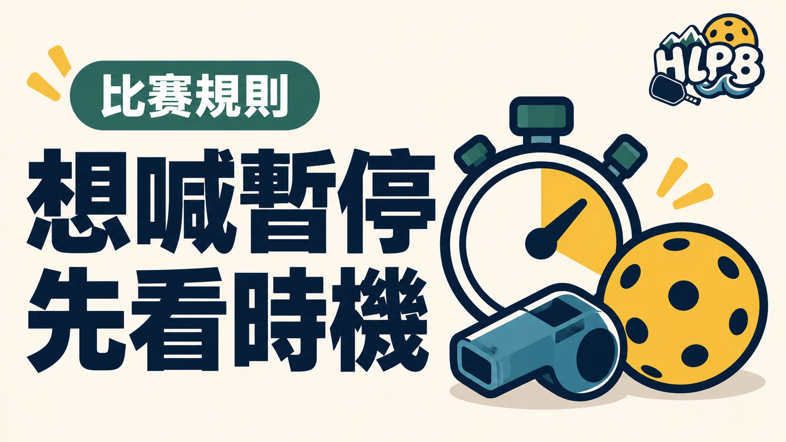

一般暫停應在回合之間、下一次發球擊出前清楚提出。不是走到場邊喝水就算完成暫停程序，發球擊出後才要求暫停，依 2026 USA Pickleball 規則會構成失誤。
次數與時間怎麼看？
| 每局目標分數 | 每位單打球員／每隊雙打可用次數 |
|---|---|
| 11 分 | 2 次 |
| 15 分 | 2 次 |
| 21 分 | 3 次 |
每次一般暫停最長一分鐘，次數以每局計算。雙打的額度是隊伍共用，不是每人各有表中的次數。本文談一般暫停，不能拿來替代醫療、裝備或換邊等不同程序。
提出時，要讓誰知道？
以清楚的聲音、手勢或兩者並用，向對手及裁判表示。提出之前，先確認回合已結束、尚未擊出下一次發球，並知道自己還有多少額度；不要用離場或不回應代替通知。
暫停時可以討論什麼？
HLPB 建議只抓一個最需要修正的重點：接下來的分工、站位或回球選擇，避免把短暫休息變成一次檢討所有失誤。這是溝通建議，不是限制球員只能討論一件事。
恢復比賽時留意裁判通知。各場活動若有不同賽制或補充規定，參賽前先核對，不直接套用休閒球局的喊停方式。
延伸閱讀：花蓮匹克球比賽，為什麼不能只看一般規則？、雙打不是各顧半場：匹克球搭檔怎麼一起移動？。
資料來源：USA Pickleball 2026 規則書。
內容更新：2026-10-20｜資料來源：USA Pickleball 官方資料
返回文章列表